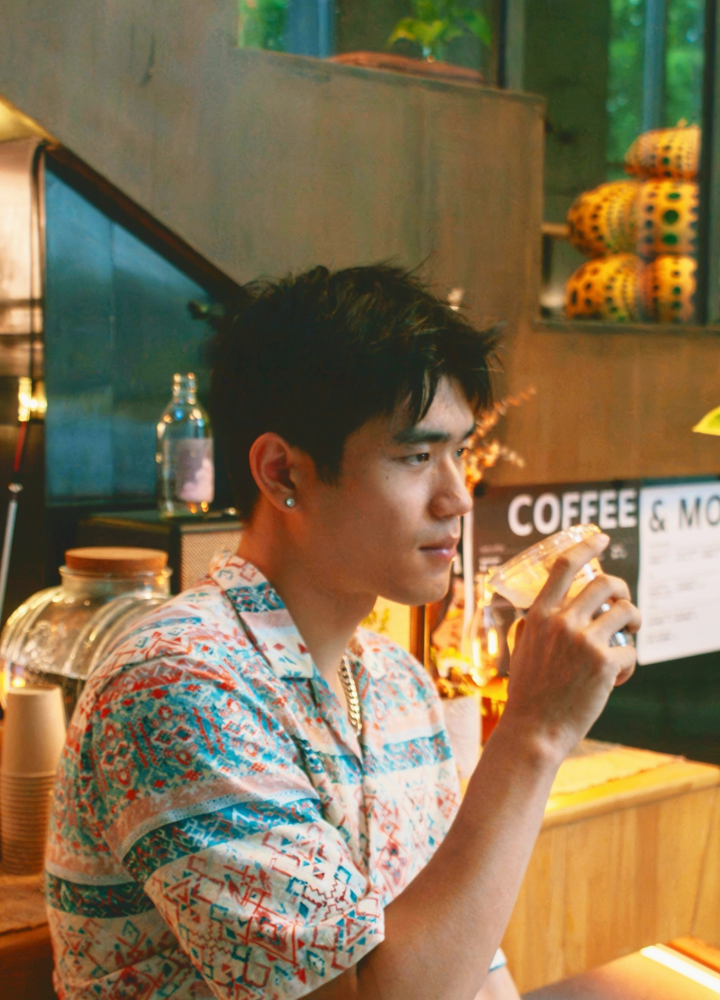
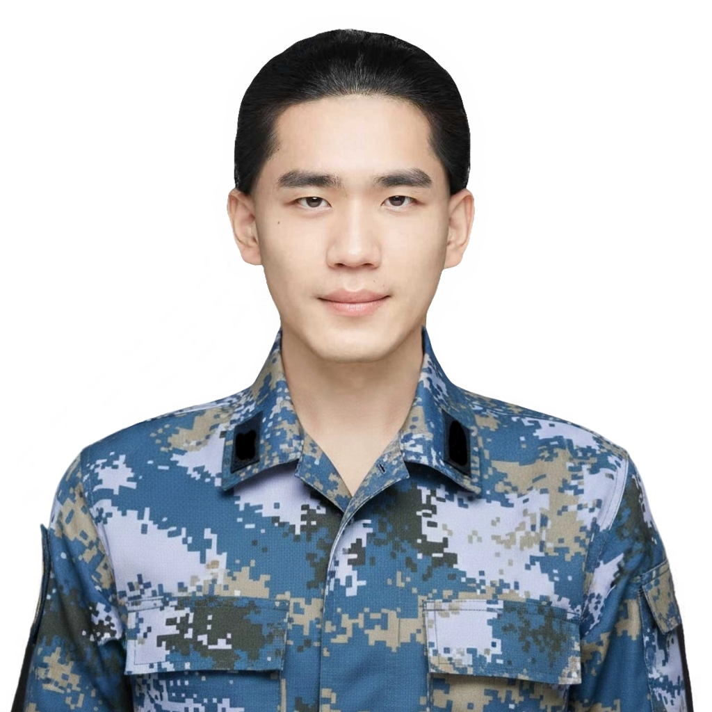
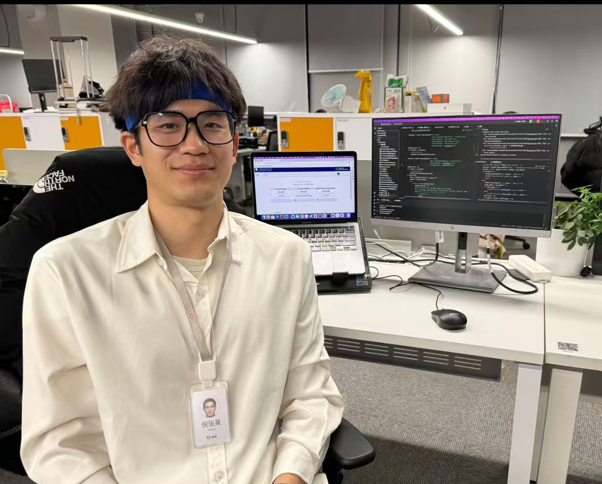
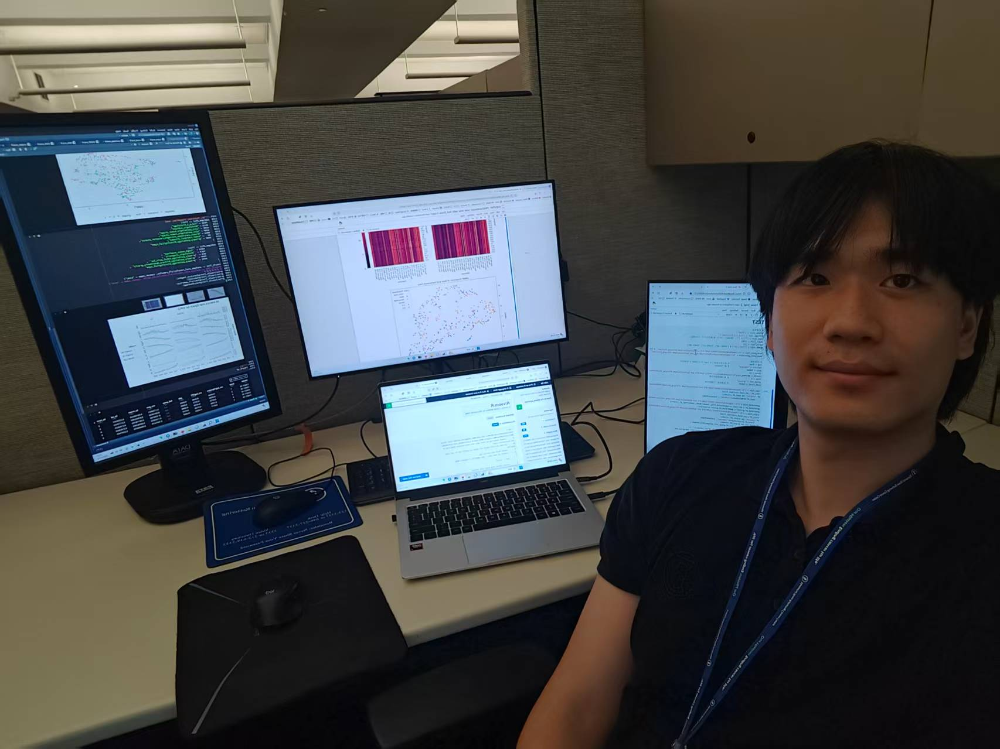

From military service to big tech and Ivy League statistics, I work at the intersection of data, execution, and real-world decision-making.

I am a Master’s student in Statistics at Columbia University, specializing in machine learning and applied data science. My academic training focuses on statistical modeling, large-scale data analysis, and modern machine learning methods, while my industry experience spans healthcare research, overseas ads monetization, and ride-hailing platforms in Brazil. I enjoy working at the intersection of data, products, and decision-making—turning complex datasets into interpretable models, actionable insights, and measurable business impact.
I have hands-on experience with Python, SQL, PyTorch, and large datasets, as well as experiment design and A/B testing. With a background in international economics and proficiency in Chinese, English, and Portuguese, I am comfortable collaborating across cultures and communicating technical insights to both technical and non-technical stakeholders. I value discipline, clarity, and responsibility, and I enjoy solving complex problems in fast-changing, real-world environments.
A few representative experiences that reflect my background, mindset, and approach to problem solving.


